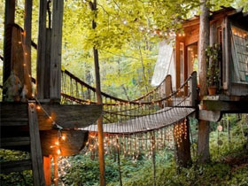

长安漫步——呜呜呜呜，逛吃逛吃
西安都城隍庙，天下三大城隍庙之一，也是我们集合的地方。西安都城隍庙，天下三大城隍庙之一，也是我们集合的地方，大学习巷清真寺，又称西大寺。是西安最古老的清真寺[详情]
2016.09.01 17:18

全球最浪漫的15个地方，一定要带老婆去！
老公，去哪儿？一生必去的15个浪漫度假地，每一个都好赞啊~习惯平淡幸福，也想和你一起牵手看尽世间美景。小伙伴们，走起吧ps：一定要耐心把图看完哦，有亮点哦~...[详情]
2016.09.09 09:09
到“中国枫叶之都”本溪赏拍枫叶
本溪市位于辽宁省东南部，市内赏枫景点众多，最著名的莫过于有“燕东胜境”之称的“关门山”，本溪也被誉为“中国枫叶之都”。我爱厨房利用国庆假期特地前往本溪拍摄枫叶，但他摒弃了最为热门的...[详情]
2016.09.05 09:25

全球九间最受欢迎的旅馆公布！只需675$一晚的树屋你想错过
这间位于印尼的大宅同样是树屋，但价格却只需 HKD$675 一晚！！！对！没看错，不用过千元就可体验树屋之旅，并有一个私家水池，三分钟就可步行到沙滩，也太吸引了吧！...[详情]
2016.09.01 17:18
一见倾心-翡冷翠（佛罗伦萨）
一见倾心，二见倾情，三见倾城，大概就是形容我第一次知道佛罗伦萨，第一次看到它的照片的激动之情。人们常说有一种感觉叫做一见钟情，很遗憾，这个倒没体会到...[详情]
2016.09.01 17:18
深度探秘美国西部 地质风光大片拍起来
有人说，在太空唯一可用肉眼看到的自然景观就是科罗拉多大峡谷。大峡谷岩石是一幅地质画卷，被誉为一部“活的地质教科书”，它在阳光的照耀下变幻着不同颜色，让人如入魔幻世界...[详情]
2016.09.09 09:09
五湖四海陌生面孔齐聚面杀,今天来的特别人多，冲美食来的
先来的玩起乌诺（来得新人都要讲解一下UNO的玩法，所以新人不要担心不会玩，我们都有专业人士），萍萍妈出完了最后一张牌，好开心的表情，可是我手里牌最多，我要惩罚，我抽取了一张惩罚牌...[详情]